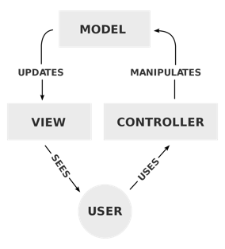

System Architecture
Our LARP (Less Aggravating Role Playing) game will utilize the Model-View-Controller design pattern. Our View will also be implemented using the JavaFX UI Toolkit.

View
The View will be our UI created in JavaFx. Because of the use of the MVC pattern in the LARP project the update method for our UI will exist in the controller. Whenever the player executes a task that requires the View to be updated the controller will execute the task as well as pass in the necessary game state data from the Model.
Controller
In our LARP game the role of the Controller is to receive input from the user/game that requires action on the game state or updating of the View. It serves as a connection between the two separated View and Model components. When the controller receives input for some sort of data to be processed it calls methods that exist in the model. If it receives input that requires the View be updated it tells the model to pass the necessary data to the view as well as calls methods in View to render the update.
Model
The Model component does the heavy lifting in the background of the game. It handles all the data processing and management of game state. Without the Model component no interesting features could be implemented into the game, it handles everything from battle logic to storing inventory and player health data.
{kind=link}
{kind=link}
{kind=link}
{kind=link}